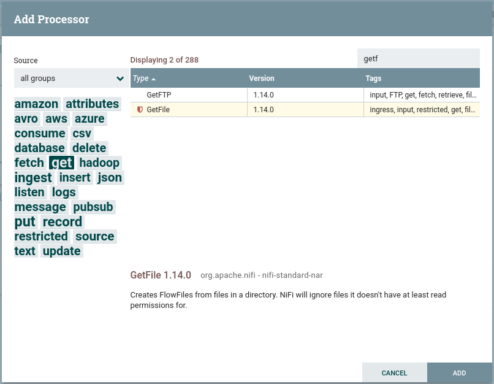

Nifi es un proyecto de Apache que plantea un sistema distribuido dedicado a ingestar y transformar datos de nuestros sistemas.
Es un proyecto open source hecho en Java, desarrollado por la National Security Agency (NSA). Es escalable, persistente y tolerante a fallos, permite la integración y conexión con gran cantidad de tecnologías, facilitando la implementación de ETLs visualmente con una sencilla interfaz basada en web mediante el uso de grafos acíclicos dirigos (DAG) de datos.
Entre sus características principales destacamos:
Flujos de datos escalables.
Más de 300 conectores.
Procesadores personalizados.
Usa el paradigma de programación basado en flujos.
Define las aplicaciones como grafos de procesos a través de conexiones que envían mensajes.
Entrega garantizada sin pérdida de datos.
Las ventajas de Nifi son:
Facilidad de uso mediante UI
Escalabilidad horizontal con un cluster de máquinas.
Cantidad de conectores
Procesadores personalizados
Evolución y comunidad
Política de usuarios (LDAP)
Multiplataforma
Licencia Open Source
Validador de configuraciones
Linaje y procedencia del dato
Sus casos de uso son:
Transferencias de datos entre sistemas, por ejemplo, de JSON a una base de datos, de un FTP a Hadoop, etc..
Preparar y enriquecer los datos
Enrutar datos en función de características
Conversión de datos entre formatos
En cambio, no es apropiado para:
Procesamiento y operaciones de cómputo distribuido
Operaciones de streaming complejas con joins o agregaciones.
Para instalar Nifi, sólo hemos de descargar la última versión desde y tras descomprimilar, debemos crear unas credenciales de acceso. Para ello, ejecutaremos el comando ./nifi.sh set-single-user-credentials <username> <password> indicando el usuario y contraseña que queramos.
A continuación, ya podemos arrancar Nifi ejecutando el comando ./nifi.sh start (se ejecutará en brackgound). Si queremos detenerlo ejecutaremos .nifi.sh stop.
Para acceder al entorno de trabajo introducimos en el navegador: https://localhost:8443/nifi y tras aceptar la alerta de seguridad respecto al certificado veremos un intefaz similar a la siguiente imagen:
Flowfile: es básicamento el dato, el cual se persiste en disco tras su creación. Realmente es un puntero al dato en su almacenamiento local, de esta manera se acelera su rendimiento. El Flowfile a a su vez se compone de dos partes:
contenido: el dato en sí
atributos: metadatos en pares de clave/valor
Procesador: encargado de ejecutar alguna transformación o regla sobre los datos o el flujo para generar un nuevo Flowfile. La salida de un procesador es un Flowfile que será la entrada de otro procesador. Todos los procesadores se ejecutan en paralelo (mediante diferentes hilos de ejecución), abstrayendo complejidad de la programación concurrente y además se pueden ejecutar en varios nodos de forma simultánea o bien en el nodo primario de un clúster.
Conector: es una cola que une diferentes procesadores y contiene los Flowfiles que todavía no se han ejecutado, pudiendo definir diferentes prioridades (por ejemplo, FIFO o LIFO según necesitemos).
Vamos a hacer un pequeño ejercicio con Nifi para familiarizarnos con el entorno desarrollando un flujo sencillo que mueva un fichero de un directorio a otro.
Ejemplo video curso y Teralco...
Poner en origen el mismo fichero dos veces
Arrancar solo origen
Ver que se queda en el buffer
Arrancar destino
Ver el mensaje de error en destino
Cambiar política con fallos (replace)
A continuación detallamos los pasos a realizar:
Seleccionamos un procesador (primer icono grande) y lo arrastramos en nuestra área de trabajo.
Nos aparece un dialogo con tres partes diferenciadas:

Diálogo de elección de procesador
A la izquierda una nube de etiquetas para poder filtrar los procesador.
Arriba a la derecha tenemos un buscador para buscar procesadores por su nombre
La parte central con el listado de procesadores, desde donde lo podemos seleccionar.
Así pues, buscamos el procesador GetFile y lo añadimos al flujo.
Damos doble click sobre el elemento gráfico que representa nuestro procesador, y en la pestaña properties indicamos el directorio de entrada de donde tendrá que recoger el fichero, en nuestro caso /home/hadoop/Documentos/in.
Añadimos un nuevo procesador de tipo PutFile
En properties indicamos el directorio de salida
Para este ejemplo sencillo “autoterminaremos” las 2 relaciones:
Ya solo nos queda unir los dos procesadores
Antes de arrancarlo, creamos un pequeño fichero en el directorio que hemos puesto como entrada
Con el segundo botón sobre el procesados le damos a START
Y vemos que tenemos fichero en la cola
Damos a START al proceso PUTFILE y vemos como el fichero pasa de la cola a este proceso marcando la entrada:
Comprobamos los directorios /in y /out para comprobar que ha movido los ficheros.
Ya hemos visto que existen más de 300 procesadores, los cuales puedes consultar en https://www.nifi.rocks/apache-nifi-processors/. A grosso modo, los más utilizados son:
Tranformación de datos: ReplaceText, JoltTransformJSON, CompressContent.
Enrutado y mediación: RouteOnAttribute, RouteOnContent
Acceso a base de datos: ExecuteSQL, ConvertJSONToSQL, PutSQL
Extracción de atributos: EvaluateJsonPath, ExtractText, UpdateAttribute
Interacción con el sistema: ExecuteProcess
Ingestión de datos: GetFile, GetFTP, GetHTTP, GetHDFS
Envío de datos: PutEmail, PutFile, PutFTP, PutKafka, PutMongo
División y agregación: SplitText, SplitJson, SplitXml, MergeContent
En Nifi solo hay un canvas de nivel superior, pero podemos construir tantos flujos lógicos como deseemos. Normalmente, para organizar las cosas, se utilizan grupos de procesos, por lo que el canvas de nivel superior puede tener varios grupos de procesos, cada uno de los cuales representa un flujo lógico, pero no necesariamente conectados entre sí.
Cada vez que se generan Flowfiles (representa un registro de datos que viaja por el flujo) estos van a tener asignados ciertos atributos por defecto. Entre estos atributos están el UUID o identificador único, su timestamp y el tamaño del fichero, mediante el uso de procesadores podremos modificar estos o añadir nuevos atributos.
Vamos a ver cómo hacerlo realizando los siguientes pasos:
I Vamos a añadir un procesador del tipo GenerateFlowFile: crea flowfiles con datos aleatorios o contenidos personalizados: útil para testear y debugear.